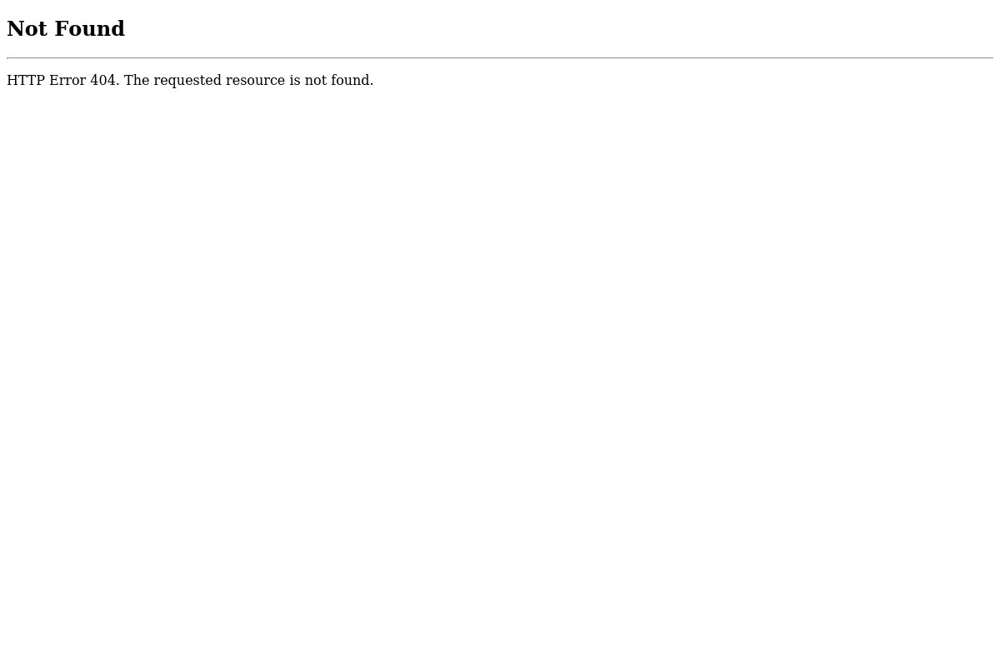

Generated by LazyRecon on Tue May 21 11:14:28 EDT 2019
Port 80 Port 443 
; <<>> DiG 9.11.4-2-Debian <<>> fs.seek.com.au ;; global options: +cmd ;; Got answer: ;; ->>HEADER<<- opcode: QUERY, status: NOERROR, id: 63990 ;; flags: qr rd ra; QUERY: 1, ANSWER: 1, AUTHORITY: 0, ADDITIONAL: 1 ;; OPT PSEUDOSECTION: ; EDNS: version: 0, flags:; MBZ: 0x0005, udp: 512 ;; QUESTION SECTION: ;fs.seek.com.au. IN A ;; ANSWER SECTION: fs.seek.com.au. 5 IN A 103.108.116.10 ;; Query time: 202 msec ;; SERVER: 192.168.58.2#53(192.168.58.2) ;; WHEN: Tue May 21 11:14:28 EDT 2019 ;; MSG SIZE rcvd: 59
fs.seek.com.au has address 103.108.116.10
HTTP/1.1 404 Not Found Content-Type: text/html; charset=us-ascii Server: Microsoft-HTTPAPI/2.0 Date: Tue, 21 May 2019 15:14:09 GMT Connection: close Content-Length: 315
nmap -sV -T3 -Pn -p3868,3366,8443,8080,9443,9091,3000,8000,5900,8081,6000,10000,8181,3306,5000,4000,8888,5432,15672,9999,161,4044,7077,4040,9000,8089,443,7447,7080,8880,8983,5673,7443 Starting Nmap 7.70 ( https://nmap.org ) at 2019-05-21 11:14 EDT Stats: 0:00:32 elapsed; 0 hosts completed (1 up), 1 undergoing Service Scan Service scan Timing: About 0.00% done Stats: 0:00:32 elapsed; 0 hosts completed (1 up), 1 undergoing Service Scan Service scan Timing: About 0.00% done Stats: 0:00:34 elapsed; 0 hosts completed (1 up), 1 undergoing Service Scan Service scan Timing: About 0.00% done Stats: 0:00:35 elapsed; 0 hosts completed (1 up), 1 undergoing Service Scan Service scan Timing: About 0.00% done Nmap scan report for fs.seek.com.au (103.108.116.10) Host is up (0.30s latency). Not shown: 31 filtered ports PORT STATE SERVICE VERSION 443/tcp open https Microsoft-HTTPAPI/2.0 8080/tcp closed http-proxy Service detection performed. Please report any incorrect results at https://nmap.org/submit/ . Nmap done: 1 IP address (1 host up) scanned in 50.87 seconds